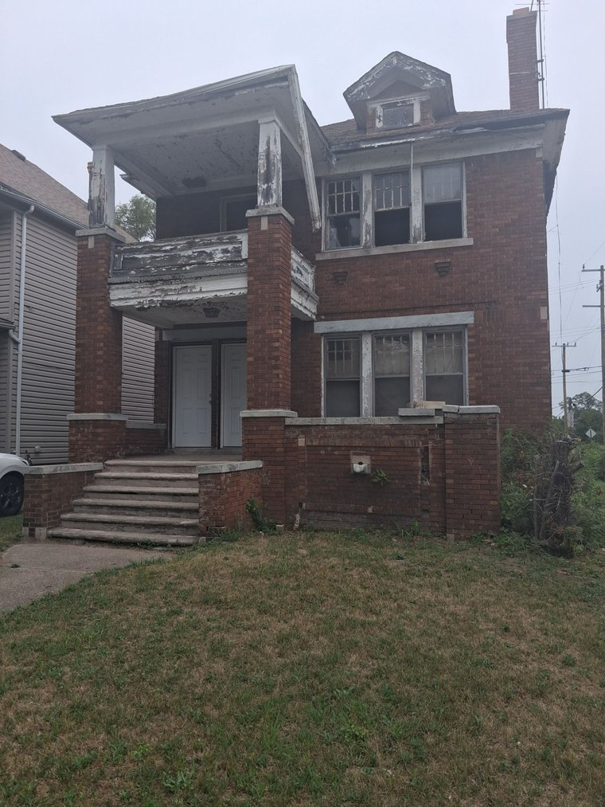
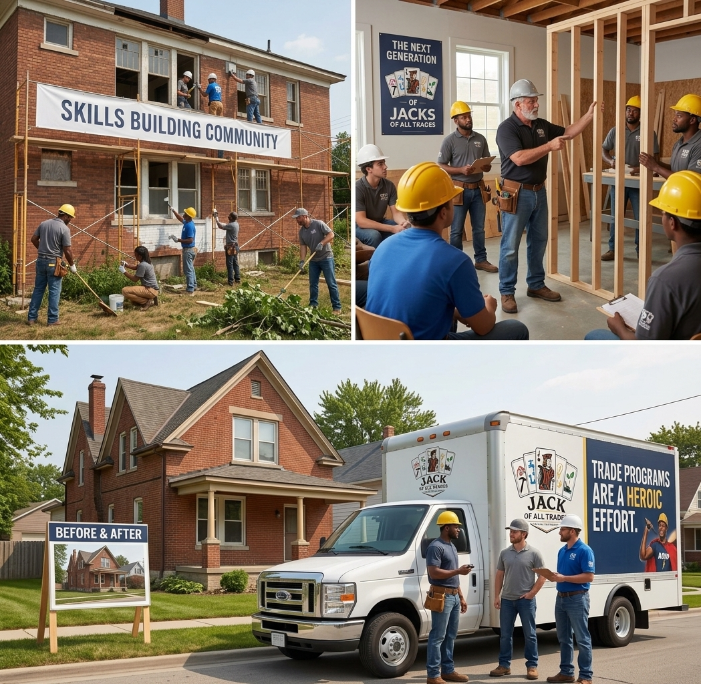
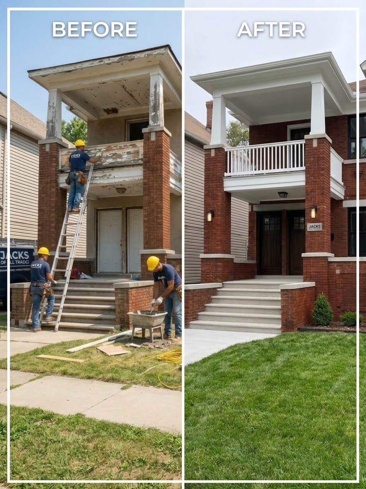
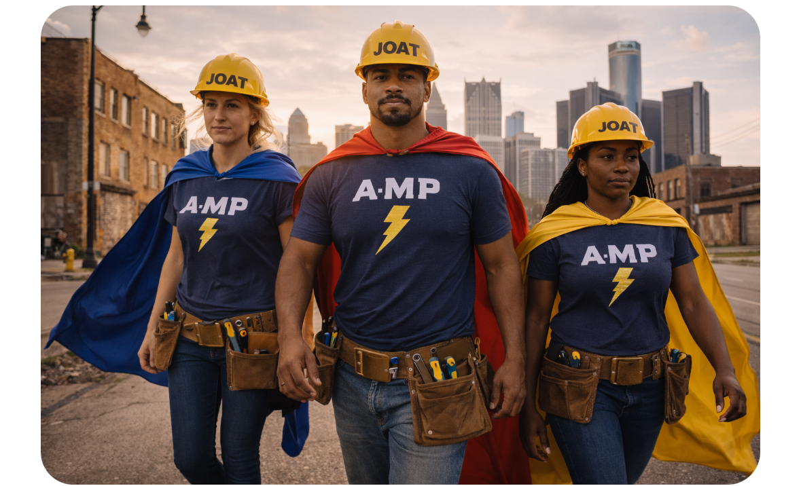

The challenge
Thousands of Detroit homes sit vacant.

The program
We train young Detroiters in six skilled trades.

The work
They rebuild these homes — by hand.

The impact
Careers. Housing. Neighborhoods reborn.

Your gift funds the next home.
Donate at joatamp.org
One Call. Every Solution.
Thanks for watching